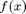
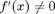
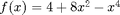
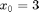
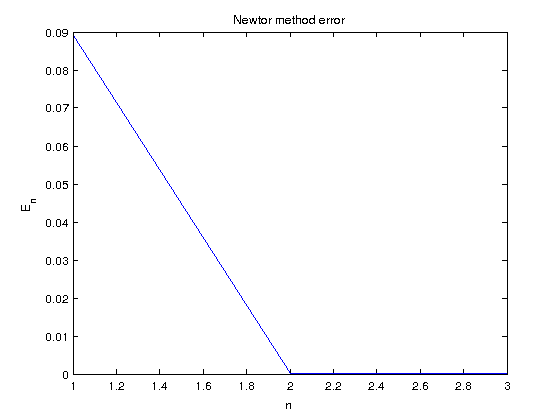
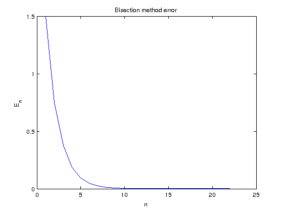
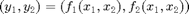

Math 340 - Lab #3
Contents
Called Functions
Newton Method
Write a script that will find a root of

using Newton's method. Your script should take a function, its derivative, initial guess, error tolerance and maximum nmber of iterations allowed as input. Make sure your script does not run infinitely in case there are no roots, or the initial guess was too far from the roots. Also make sure to test that
. In either case your script should give an error message.Test your function for

with initial guess
clear all clc % define the function: f = @(x) 4 + 8.*x.^2 - x.^4; %define the derivative of the function df = @(x) 16.*x - 4.*x.^3; % error tolerance and maximum number of iterations Error = 1E-6; max_iter = 20; % call function 'newton' [app_root, iterates] = newton(f,df,3,Error,max_iter); fprintf('The root of the function is %10.6f\n',app_root) app_error = abs(iterates(2:end) - iterates(1:end-1)); % calculate approximated error = \|x_{n+1} - x_n\| figure(1) plot(1:length(iterates)-1,app_error) % Plot error vs numer of iterastions xlabel('n'), ylabel('E_n') title('Newtor method error')
The root of the function is 2.910693

Bisection Method
Do the same for bisection method. Remember you will need two initial guesses in this case.
clear all clc % define the function: f = @(x) 4 + 8.*x.^2 - x.^4; % Starting interval: a = 1; b = 4; Error = 1E-6; % call function 'bisection' [app_root, iterates] = bisection(f,a,b,Error,50); fprintf('The root of the function is %10.6f\n',app_root) % upper bound for error in bisection method is the length of the interval: app_error = (b-a)./2.^(1:length(iterates)); % plot error vs iteration number plot((1:length(iterates)),app_error) xlabel('n'), ylabel('E_n') title('Bisection method error')
The root of the function is 2.910693

Order of convergence
Plot the error vs number of iterations. Which method converges faster?
Extra credit - keep working on this...
Write a script that will implement the Newton's method for finding a root of function of two variables.

Think about how you can generalize your code for n variables.